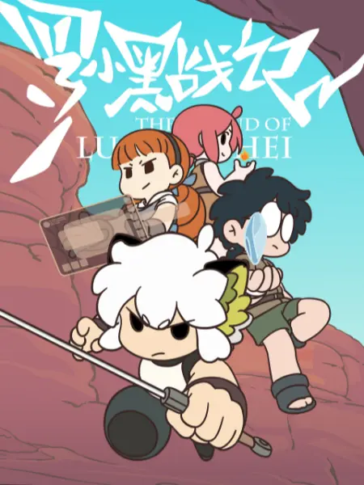

《有兽焉》
简介：上古神兽貔貅皮皮来到了人间，为了躲避人类追捕，逃到了好友四不像开的专门帮助神兽的鹿人店，并结识了一群来自四面八方，性格各异的神兽，开始了远离人烟，轻松惬意的日常。
bilibili

《非人哉》
简介：中国古典神话传说中的“著名”精怪是如何在现代社会生存下去，他们成为了我们身边有着神仙特色的宅女、暖男、上班族、犬系男友，他们上演着生活中搞笑而怪诞的小故事，关乎快乐、关乎友情，在我们平凡、忙碌的日常构建了不可思议的二次元神仙幻境。
bilibili

《罗小黑战记》
简介：猫妖小黑盗取天明珠被谛听发现，被打回原形重伤而逃，在流落街头之时被罗小白带回了家，起名罗小黑。有一天小黑突然变成了人形，告诉小白自己要暂时离开去完成师父交给自己的任务。却在离开之后因为师父交给自己的任务又回到了小白身边，等待着他们的会是什么呢……
bilibili